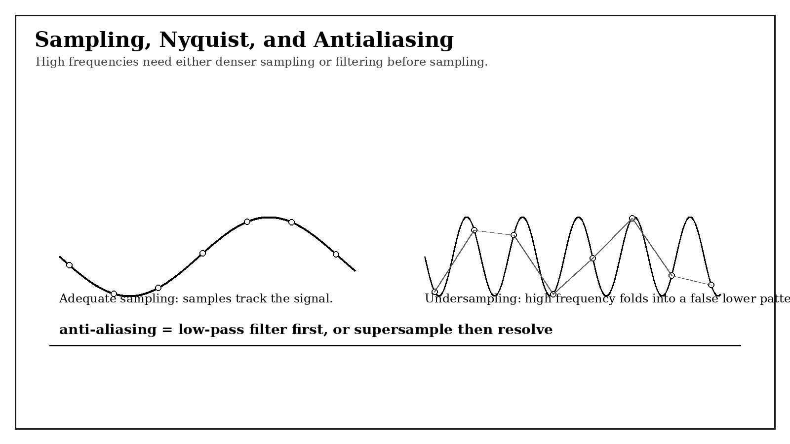
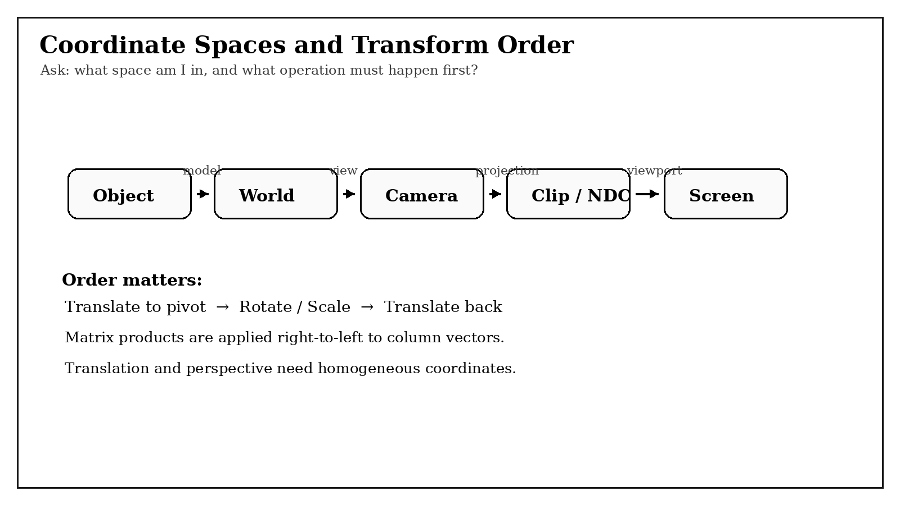
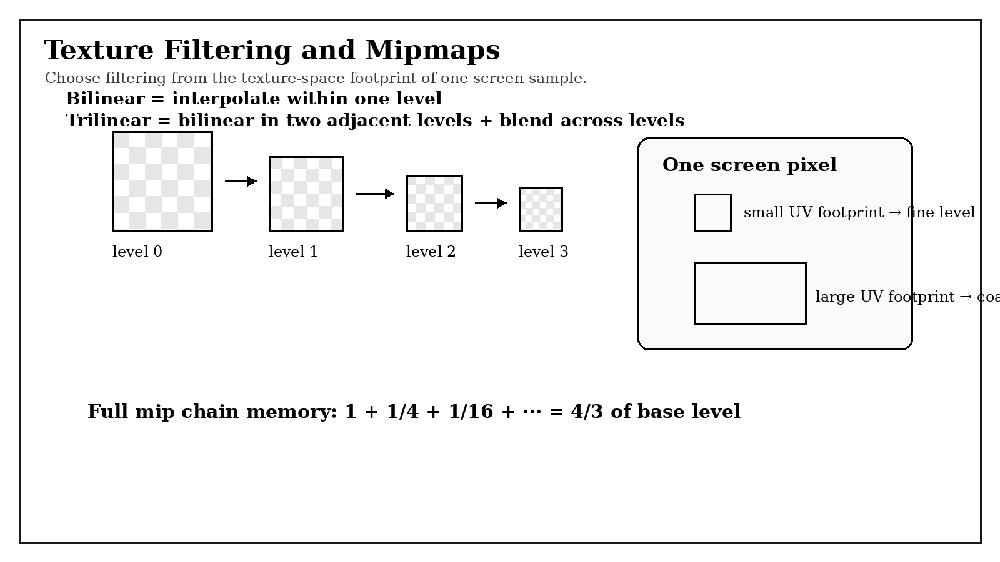
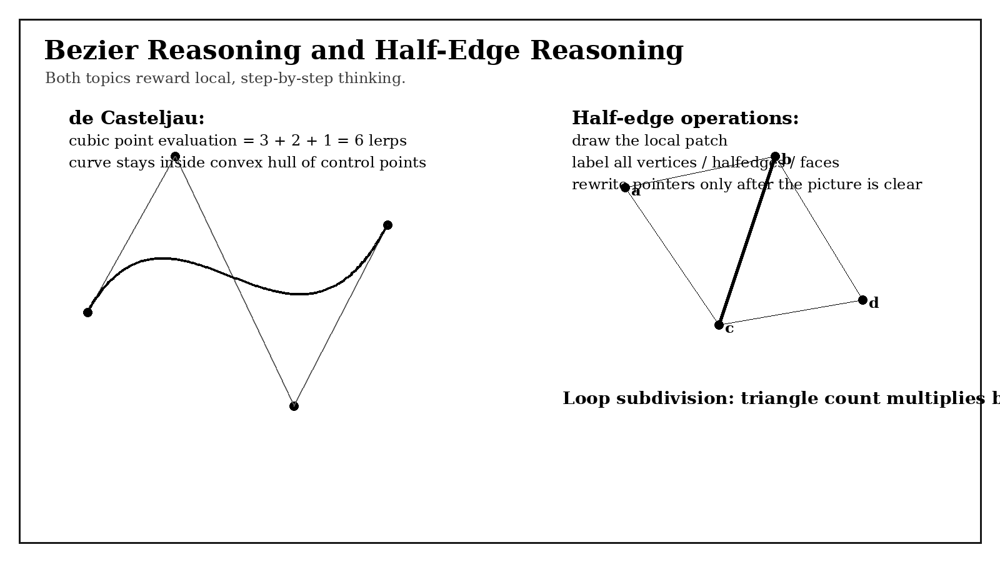
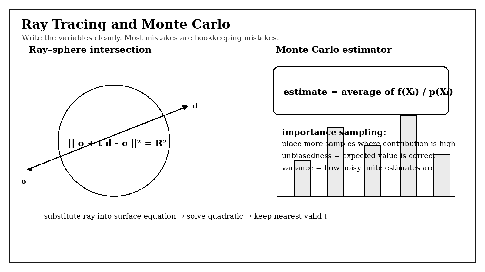

This page is meant to behave like a dense subject reference, not a quick summary. The goal is to keep the vocabulary, symbols,
pipeline steps, geometric constructions, and stochastic estimators all in one place so that when a homework or exam problem says
"explain why," "derive the expression," or "choose the correct method," the underlying math is already spelled out.
Graphics questions often disguise one topic as another. Texture mapping is still a sampling problem. Mip levels are still frequency control.
Barycentric interpolation is affine geometry. Perspective correction is projective geometry. Ray tracing converts geometric intersection into algebra in the
parameter \(t\). Monte Carlo rendering is integral estimation with careful bookkeeping of PDFs and units. Many short conceptual questions become much easier when
the real underlying object is named correctly.
How to use the page
For a conceptual question, first identify the domain: image plane, texture space, object space, world space, direction space, or probability space.
For a derivation, write every variable explicitly before manipulating the equation.
For a multiple-choice or true/false prompt, ask what principle is actually being tested: sampling theorem, transform order, visibility, interpolation, convex hull, hierarchy, units, unbiasedness, or variance.
For an implementation-style question, reduce the algorithm to its local test: inside-triangle, matrix composition, texel footprint, local connectivity rewrite, intersection interval, or estimator formula.

Figure 1. A large portion of the course is about mapping one domain into another and controlling the information lost in the process.
Notation and Definitions
Every formula below uses standard local notation. When a symbol appears in a later section, it should either match the meanings defined here or be redefined locally nearby.
Signals, samples, and images
Signal: a quantity varying over a domain, for example intensity over image position or radiance over direction.
Continuous signal: defined at every point of the domain.
Discrete signal: known only at sampled locations.
Sample: one measured or evaluated value of the signal.
Sampling rate: sample density per unit length, area, time, or angle.
Frequency: rate of oscillation or variation; high frequency corresponds to fine detail or rapid change.
Nyquist rate: \(2 f_{\max}\), twice the highest frequency present in the signal.
Aliasing: high-frequency content appears falsely as lower-frequency content after undersampling.
Prefiltering: low-pass filtering before sampling.
Reconstruction filter: filter used to reconstruct or resolve a continuous approximation from samples.
Pixel: one output image cell.
Subsample: one sample location inside a pixel during supersampling.
Coverage: how much of a pixel or sample cell is covered by a primitive.
Rasterization: converting projected geometry into discrete pixel or sample values on a raster grid.
Triangle attribute: any quantity attached to vertices and interpolated across the triangle, such as color, depth, normal, or UV.
Edge function: signed area test used to decide which side of a triangle edge a point lies on.
Barycentric coordinates: weights \(\alpha,\beta,\gamma\) such that
\(p=\alpha p_0+\beta p_1+\gamma p_2\) and \(\alpha+\beta+\gamma=1\).
Inside-triangle condition: under the standard orientation convention, \(p\) is inside when \(\alpha,\beta,\gamma\ge 0\).
Affine interpolation: interpolation of the form \(\alpha q_0+\beta q_1+\gamma q_2\) when the weights sum to 1.
Coordinates, vectors, and transforms
Point: a location, written as \((x,y)\) or \((x,y,z)\).
Vector: a displacement or direction.
Matrix: linear operator or, with homogeneous coordinates, an affine or projective transform.
Homogeneous coordinate: extra coordinate \(w\) used so translation and perspective can be represented before division.
Affine transform: preserves lines and affine combinations; includes translation, rotation, scale, and shear.
Object space: coordinates local to the model.
World space: shared scene coordinates.
View / camera space: coordinates relative to the camera.
Clip space: coordinates after projection but before perspective divide.
NDC: normalized device coordinates after dividing by \(w\).
Screen / raster space: pixel coordinates.
Depth: camera-relative coordinate used for visibility comparisons.
Z-buffer: per-pixel or per-sample record of the closest depth seen so far.
de Casteljau algorithm: recursive evaluation of a Bezier curve by repeated linear interpolation.
Hermite curve: cubic curve determined by endpoint positions and endpoint tangents.
Catmull-Rom spline: interpolating spline whose tangents are inferred from nearby points.
Face normal: vector perpendicular to a face, often from a cross product.
Vertex normal: smoothed normal from neighboring faces.
Valence: number of incident edges or neighboring vertices at a mesh vertex.
Half-edge: directed edge record storing local connectivity.
Subdivision: mesh refinement plus vertex-update rules.
Loop subdivision: triangle-mesh subdivision scheme creating four child triangles per parent triangle.
Catmull-Clark subdivision: quad-oriented subdivision scheme producing a smooth limit surface from polygonal control cages.
Rays, light transport, and stochastic quantities
Ray: \(r(t)=o+td\), with origin \(o\), direction \(d\), and parameter \(t\).
Intersection interval: valid range \([t_{\min},t_{\max}]\) for acceptable hits.
Sphere: set of points \(x\) such that \(\|x-c\|^2=R^2\).
AABB: axis-aligned bounding box.
BVH: bounding volume hierarchy, a tree of bounding boxes.
Flux \(\Phi\): radiant power, in watts.
Irradiance \(E\): flux per unit area, in \(W/m^2\).
Radiance \(L\): power per unit projected area per unit solid angle.
Solid angle: directional measure in steradians; a hemisphere subtends \(2\pi\).
BRDF \(f_r\): bidirectional reflectance distribution function.
PDF \(p(x)\) or \(p(\omega)\): probability density for continuous sampling.
Estimator: random quantity built from samples to estimate an integral.
Unbiased: expectation equals the target quantity.
Variance: spread of estimator values around their expectation.
Standard variable meanings:
p, p0, p1, p2 = points or triangle vertices
alpha, beta, gamma = barycentric weights
x, y, z = Cartesian coordinates
u, v = texture coordinates or surface parameters
w = homogeneous coordinate
M, T, R, S = transform, translation, rotation, scale matrices
o = ray origin
d = ray direction
t = ray or curve parameter
c = sphere center
R = sphere radius (local context decides if R means radius or rotation)
n = unit surface normal
l = incident light direction
v = outgoing/view direction in shading context
h = half-vector in shading context
Phi, E, L = flux, irradiance, radiance
fr = BRDF
p(x), p(omega) = sampling PDF
N = number of Monte Carlo samples
Sampling and Antialiasing
Variables used here. Let \(f\) be the continuous signal, \(f_s\) the sampled signal, and \(f_{\max}\) the highest frequency present.
In rasterization let \(p_0,p_1,p_2\) be triangle vertices and \(q_0,q_1,q_2\) associated vertex attributes.
Core principle
Sampling converts a continuous quantity into discrete data. The danger is not just "losing detail" in a vague sense. The precise failure mode is that content above the representable frequency range folds into false low-frequency patterns.
That is why jaggies, moire, and wagon-wheel artifacts are all sampling errors, even though they look visually different.
Nyquist and aliasing
If the highest frequency present is \(f_{\max}\), then the sampling rate must exceed \(2f_{\max}\) to avoid aliasing. If this condition fails, the sampled spectrum overlaps itself and different original frequencies become indistinguishable in the sampled data.
In graphics language: fine geometric detail, high-frequency textures, or sharply varying radiance can masquerade as coarse patterns once discretized.
Prefiltering, supersampling, and reconstruction
Prefiltering removes frequencies the sample grid cannot support.
Supersampling increases sample density first, then resolves by averaging.
Reconstruction / resolve combines subsamples into the final pixel value, usually by a box filter in the basic course implementation.
Important distinction: post-blur can hide artifacts, but only prefiltering or sufficiently dense sampling actually prevents frequency folding.
Rasterization as sampling
Triangle rasterization is sampling coverage on a 2D grid. A sample location is either inside the projected triangle or not, and if it is inside then vertex attributes are interpolated there.
The basic pipeline is:
Find a bounding box for the projected triangle.
Loop over sample points in the box.
Run an inside-triangle test, often using edge functions or barycentric coordinates.
If the sample is inside, interpolate depth and other vertex attributes.
Store into the supersample buffer or compare against the Z-buffer as appropriate.
After all primitives are processed, resolve the sample buffer to pixels.
Barycentric coordinates and attribute interpolation
Given a point \(p\) in the plane of the triangle, barycentric coordinates satisfy
\[
p=\alpha p_0+\beta p_1+\gamma p_2,\qquad \alpha+\beta+\gamma=1.
\]
For any attribute \(q\) attached to vertices, affine interpolation gives
\[
q(p)=\alpha q_0+\beta q_1+\gamma q_2.
\]
This is why barycentric coordinates are central: they simultaneously provide the inside test and the interpolation weights.
For ordinary screen-space interpolation, \(\alpha,\beta,\gamma\) can be computed from signed areas or edge functions.
A common conceptual mistake is to remember only that they sum to 1. That condition is necessary for affine combinations, but not sufficient for inside-ness. Inside the triangle under the standard orientation also requires \(\alpha,\beta,\gamma\ge 0\).
Perspective-correct interpolation
Affine interpolation in screen space is not correct for quantities defined before projection, such as texture coordinates. Perspective projection is not affine after division by \(w\), so naive interpolation of \(u,v\) in screen space produces visible distortion.
The fix is to interpolate projectively:
\[
u = \frac{\alpha u_0/w_0+\beta u_1/w_1+\gamma u_2/w_2}{\alpha /w_0+\beta /w_1+\gamma /w_2},
\qquad
v = \frac{\alpha v_0/w_0+\beta v_1/w_1+\gamma v_2/w_2}{\alpha /w_0+\beta /w_1+\gamma /w_2}.
\]
Same idea for any attribute defined before the perspective divide.
What to write when asked why supersampling helps
A strong answer is: supersampling increases the density of coverage samples and attribute samples before reconstruction. This captures more subpixel variation, and averaging the finer sample grid acts like a low-pass filter when resolving to the final image.
Common confusions
Aliasing is not the same thing as blur. Blur may hide aliasing but is not aliasing itself.
Nyquist is about the highest frequency present, not about "twice as many pixels" in a casual sense.
In supersampling, do not resolve each triangle independently into the final framebuffer; accumulate contributions on the sample grid first, then downsample.
Coverage and shading are conceptually distinct: a sample may be geometrically covered, then shaded using interpolated attributes.
Variables used here. Write homogeneous points as \(\tilde p=(x,y,z,w)^T\).
Common transform factors are \(T\) for translation, \(R\) for rotation, \(S\) for scale, and \(M\) for a composed transform.
Linear versus affine versus projective
A purely linear map preserves the origin. Translation does not preserve the origin, so it cannot be represented by a plain \(2\times 2\) or \(3\times 3\) matrix acting on Cartesian coordinates.
Homogeneous coordinates add one coordinate \(w\) so affine transforms become matrix multiplications in one higher dimension. Perspective projection then uses a final division by \(w\), making it projective rather than affine.
With column vectors, the product \(M = TRS\) means scale first, then rotate, then translate. This right-to-left action is one of the most common sources of mistakes.
Transform order matters because matrix multiplication is not commutative. Rotating around the origin and then translating does not produce the same result as translating first and then rotating around the origin.
When a problem describes rotation or scaling around a pivot point \(c\), the usual construction is:
\[
M = T(c)\, A \, T(-c),
\]
where \(A\) is the desired local rotation or scale. First move the pivot to the origin, apply the local operation, then move back.
Frame changes and inverse transforms
A transform from object to world space moves geometry into the global scene frame. A camera transform can be thought of either as moving the camera in world space or, equivalently, transforming the world into camera space.
These viewpoints are inverses of each other. Questions about frame-to-world versus world-to-frame are often really asking whether you know which transform must be inverted and whether multiplication order reverses under inversion.
The pipeline
object space \(\rightarrow\) world space \(\rightarrow\) camera/view space \(\rightarrow\) clip space \(\rightarrow\) perspective divide \(\rightarrow\) normalized device coordinates \(\rightarrow\) raster/screen space
Object to world: place the model in the scene.
World to camera: express everything relative to the camera.
Projection to clip space: encode perspective and visibility region.
Perspective divide: divide by \(w\) to get NDC.
Viewport transform: map NDC to pixel coordinates.
Perspective projection and the divide
The central reason perspective requires division is that projected image size scales roughly like \(1/z\), not by any affine rule in Cartesian coordinates.
Homogeneous projection produces coordinates whose visible position is recovered only after dividing by \(w\). This is exactly what causes distant objects to shrink.
Normals under transforms
For rotations, transforming normals by the same matrix is fine because rotations preserve perpendicularity. Under nonuniform scale or shear, however, applying \(M\) directly to a normal can destroy orthogonality.
The correct transformed normal is proportional to \((M^{-1})^T n\), then renormalized.
Depth and the Z-buffer
The Z-buffer stores the closest depth seen so far at each pixel or sample. At the beginning of a frame it should be initialized to the farthest value under the chosen convention.
A fragment updates the color and depth only if its depth is closer than the stored one.
Conceptually this is a visibility computation, not a shading computation.
Clipping and valid ranges
Before rasterization, geometry outside the view frustum is clipped. After projection but before the perspective divide, clip-space inequalities determine what is potentially visible.
Ignoring clipping can cause triangles to project incorrectly or produce invalid interpolations across the screen.
Common confusions
Translation is not representable by a plain linear map on Cartesian coordinates.
Right-to-left multiplication order with column vectors must be respected.
World-to-camera is the inverse of camera-to-world.
The perspective divide is a real mathematical step, not just a stylistic notation change.
Normals are not ordinary points and should not be transformed by full affine matrices blindly.
Short derivation habit
When a problem gives a matrix and asks what it does geometrically, separate the linear part from the translation column.
Then ask whether the linear part looks like rotation, scale, reflection, or shear, and only after that interpret the full affine action.

Figure 2. Most pipeline questions reduce to identifying the current coordinate space and the next required map.
Texture Mapping, Filtering, and Mipmaps
Variables used here. Texture coordinates are \((u,v)\). Texture values are written \(T(u,v)\).
Screen coordinates are \((x,y)\). The local footprint is estimated from \(\partial u/\partial x,\partial v/\partial x,\partial u/\partial y,\partial v/\partial y\).
Texture mapping is still sampling
A texture is a sampled image being resampled again on a surface. That means all the sampling language returns: minification is a risk of aliasing, magnification is a reconstruction problem, and mipmaps are prefiltered representations meant to match footprint size.
Basic filtering modes
Nearest: one texel, fastest and blockiest.
Bilinear: linear interpolation in two texture directions inside one level.
Trilinear: bilinear on two neighboring mip levels plus a level interpolation.
Magnification versus minification
In magnification, a few texels must be reconstructed over many pixels, so smoother interpolation helps.
In minification, one pixel covers many texels, so aliasing becomes the main issue. The correct response is to prefilter or sample a coarser mip level approximating the average over that larger footprint.
Mipmap idea and storage cost
Each mip level reduces width and height roughly by a factor of two, so area and texel count reduce by a factor of four. The total texel count therefore forms the geometric series
\[
1+\frac14+\frac1{16}+\cdots = \frac43.
\]
So a complete mip pyramid uses about \(4/3\) as much memory as the base texture alone.
Footprints and level selection
The mip level is not chosen from triangle size alone. It is chosen from the size of a screen pixel's footprint after mapping that pixel into UV space.
If \((u,v)\) varies rapidly across the screen, then one pixel corresponds to a large UV region and a coarser mip level is needed.
The derivative information
\[
\frac{\partial u}{\partial x},\frac{\partial v}{\partial x},\frac{\partial u}{\partial y},\frac{\partial v}{\partial y}
\]
captures how large and distorted that mapped footprint is.
A common practical estimate is to form two local UV edge vectors corresponding to one-pixel steps in screen space and use the larger of their lengths to estimate the footprint diameter in texels.
Then the mip level is roughly the base-2 logarithm of that diameter.
The exact implementation details vary, but the conceptual meaning is always the same: choose the level whose texel size matches the projected pixel footprint.
Perspective-correct UV interpolation
Texture coordinates attached to vertices live before the perspective divide, so if they are interpolated affinely after projection the texture will warp incorrectly. The fix is the same projective interpolation rule discussed in the sampling section:
interpolate \(u/w\), \(v/w\), and \(1/w\), then divide at the end.
What each filtering method actually answers
Nearest asks: which texel center is closest?
Bilinear asks: what is the linear blend inside this one level's local cell?
Trilinear asks: what blend should we use when the correct scale lies between two mip levels?
Anisotropic filtering, if mentioned, asks: what if the pixel footprint is stretched strongly in one direction rather than approximately circular?
Common confusions
Bilinear does not blend across levels; trilinear does.
Mipmaps are mainly for minification, not magnification.
Choosing a mip level from triangle area alone ignores parameterization stretch and perspective effects.
Texture mapping artifacts can come from both wrong interpolation and wrong level selection.
Useful formulas and local habits
Bilinear interpolation:
interpolate in u between two texels on the lower row,
interpolate in u between two texels on the upper row,
then interpolate those two results in v.
Perspective-correct UV:
u = (alpha*u0/w0 + beta*u1/w1 + gamma*u2/w2) / (alpha/w0 + beta/w1 + gamma/w2)
v = (alpha*v0/w0 + beta*v1/w1 + gamma*v2/w2) / (alpha/w0 + beta/w1 + gamma/w2)
Mipmap memory:
1 + 1/4 + 1/16 + ... = 4/3

Figure 3. The mip level is really an estimate of pixel footprint size in texture space.
Curves, Splines, Meshes, and Subdivision
Variables used here. Curve parameter \(t\in[0,1]\). Cubic Bezier control points \(P_0,P_1,P_2,P_3\).
Mesh vertices, edges, faces, and half-edges are denoted locally as needed.
Bezier curves
A cubic Bezier curve can be written in Bernstein form
\[
B(t)=\sum_{i=0}^3 B_i^3(t)P_i
\]
with Bernstein basis functions
\[
B_i^3(t)=\binom{3}{i}(1-t)^{3-i}t^i.
\]
This representation shows immediately that the curve is a weighted average of control points with nonnegative weights summing to 1, which explains the convex hull property.
de Casteljau evaluation
The de Casteljau algorithm evaluates the same curve recursively through linear interpolation:
\[
Q_i=(1-t)P_i+tP_{i+1},\qquad
R_i=(1-t)Q_i+tQ_{i+1},\qquad
B(t)=(1-t)R_0+tR_1.
\]
For a cubic curve this means three first-level lerps, two second-level lerps, and one final lerp: six intermediate interpolations.
de Casteljau is not just a convenient numerical trick. It exposes geometric structure: every intermediate point remains inside the convex hull of the previous layer, so the final point remains inside the convex hull of the original control points.
Continuity ideas
\(C^0\) continuity: positions match across a join.
\(C^1\) continuity: first derivatives / tangents match.
\(G^1\) continuity: tangent directions agree up to scaling, so the join is visually smooth even if derivative magnitudes differ.
Many spline questions are really continuity questions in disguise.
Hermite and Catmull-Rom
A cubic Hermite curve is determined by endpoint positions and endpoint tangents. So the data is
\[
P_0,\;P_1,\;T_0,\;T_1.
\]
Catmull-Rom splines instead interpolate through control points and infer tangent information from neighboring points. This is why Catmull-Rom is often described as an interpolating spline while Bezier is usually approximating rather than interpolating its interior control points.
Bezier surfaces
A tensor-product Bezier patch extends the curve idea in two parameters. The usual evaluation strategy is to run de Casteljau in one parameter direction to get a curve or a reduced control net, then evaluate in the other parameter.
The key mental move is that the 2D patch is built from the same repeated 1D interpolation principle.
Normals
For a triangle with vertices \(a,b,c\), one face normal can be computed from
\[
n_f \propto (b-a)\times(c-a).
\]
The magnitude of this cross product is proportional to triangle area, which is why summing unnormalized face normals already behaves like area weighting.
An area-weighted vertex normal is therefore
\[
n_v \propto \sum_i n_{f_i},
\]
followed by normalization.
Mesh data structures
A half-edge record usually stores references to:
its incident vertex,
its twin half-edge across the same undirected edge,
its next half-edge around the current face,
its parent edge,
its incident face.
Vertices, edges, and faces usually each store one representative half-edge so local traversals can begin there.
Questions about half-edge edge flip or split are fundamentally local topology-rewrite problems. The safest method is always to draw the one-ring neighborhood, label every pointer, then rewrite systematically.
Subdivision
Subdivision performs two conceptually separate actions: a topological refinement step and a geometric smoothing step.
For Loop subdivision on triangle meshes, each old triangle becomes four new triangles, so starting from \(N\) triangles, after \(k\) levels there are
\[
N\cdot 4^k
\]
triangles.
Old and new vertex positions are then updated using local weighted averages depending on valence.
Catmull-Clark is similar in spirit but is naturally tied to quad structure in the refined mesh. Even when the original control cage has nonquad faces, one subdivision step inserts face points, edge points, and updated vertex points, and the resulting refined mesh is organized into quads.
Valence and local behavior
Valence matters because the weights for subdivision and smoothing rules depend on how many neighboring vertices are attached to a vertex.
Ordinary vertices use the standard local rule, while extraordinary vertices are exactly the places where the mesh departs from the regular pattern.
Questions about smoothness, limit surfaces, or visual artifacts near unusual vertices often turn on this distinction.
Common confusions
Control points are not usually points on the Bezier curve except at special locations such as the endpoints.
Hermite data includes tangents; forgetting them destroys the definition of the curve.
Catmull-Rom passes through its interpolation points; Bezier usually does not pass through interior control points.
Subdivision is not exact shape preservation; it changes geometry while refining connectivity.
Half-edge reasoning done purely verbally is error-prone. Draw the neighborhood.
Useful formulas
Cubic Bezier:
B(t) = (1-t)^3 P0 + 3(1-t)^2 t P1 + 3(1-t) t^2 P2 + t^3 P3
de Casteljau first level:
Qi = (1-t) Pi + t Pi+1
Face normal:
nf proportional to (b-a) x (c-a)
Loop triangle growth:
after k levels: N * 4^k triangles

Figure 4. Many geometry questions become easy once the local interpolation or local connectivity pattern is drawn explicitly.
Ray Tracing and Acceleration Structures
Variables used here. Rays are \(r(t)=o+td\). Sphere center \(c\), radius \(R\), valid interval \([t_{\min},t_{\max}]\).
General idea
Ray tracing turns visibility and light transport into repeated geometric intersection queries.
For each ray, write the ray equation, substitute into the implicit or parametric surface equation, solve for candidate \(t\)-values, and keep only the nearest valid one in the allowed interval.
Ray-sphere intersection
A sphere is given by
\[
\|x-c\|^2=R^2.
\]
Substitute \(x=r(t)=o+td\):
\[
\|o+td-c\|^2=R^2.
\]
Expanding gives a quadratic
\[
a t^2 + b t + c_0 = 0
\]
where
\[
a=d\cdot d,\qquad
b=2d\cdot(o-c),\qquad
c_0=(o-c)\cdot(o-c)-R^2.
\]
Then solve with the quadratic formula and keep the smallest positive root that lies inside \([t_{\min},t_{\max}]\).
Ray-plane and ray-triangle reasoning
A plane with point \(p_0\) and normal \(n\) satisfies
\[
n\cdot(x-p_0)=0.
\]
Substituting \(x=o+td\) gives
\[
t = \frac{n\cdot(p_0-o)}{n\cdot d},
\]
provided \(n\cdot d\neq 0\). This already reveals the key cases:
parallel rays have denominator zero, and hits behind the ray origin produce \(t<0\).
For a triangle, one typically first intersects the plane, then checks whether the hit point lies inside the triangle using barycentric coordinates or edge tests.
Intersection intervals
The interval \([t_{\min}, t_{\max}]\) is not cosmetic. It prevents self-intersections, ignores hits behind the origin, and helps traversal prune farther hits once a nearer one has already been found.
A candidate algebraic root is not yet a valid geometric hit until it passes the interval test.
BVHs and acceleration
A BVH stores simple bounding volumes around groups of primitives. Its power comes from rejecting many primitives with one cheap test.
If a ray misses a node's box, then every primitive in that subtree can be skipped.
This reduces the number of expensive primitive-intersection tests dramatically.
AABB slab intuition
For an axis-aligned box, the ray enters and exits along each coordinate slab. One computes an interval of \(t\)-values for the x-slab, y-slab, and z-slab, then intersects those intervals.
If the resulting global interval is empty, the ray misses the box. If it is nonempty, the ray hits the box.
This is conceptually an interval-overlap problem, not a heavy geometric derivation.
Recursive rays
Once a primary ray hits a surface, the renderer may spawn reflection, refraction, or shadow rays. In path tracing, repeated scattering events produce long random paths.
At that point, ray tracing and Monte Carlo integration meet: each bounce is both a geometric query and part of a stochastic estimator.
Common confusions
Negative \(t\) values lie behind the ray origin and should usually be rejected.
The smaller valid positive root is the first sphere hit, not automatically the larger one.
A BVH node encloses all geometry in its subtree, not just one child or whichever child has larger extent.
Bounding boxes reduce average work; they do not change the exact intersection mathematics for the primitives themselves.
Useful formulas
Ray:
r(t) = o + t d
Sphere:
||o + t d - c||^2 = R^2
Plane:
t = n . (p0 - o) / (n . d)
Valid hit:
t in [tmin, tmax], and among valid roots choose nearest one

Figure 5. Ray problems become much more manageable when every variable in the intersection equation is named before expanding.
Irradiance \(E\): incident flux per unit area, in \(W/m^2\).
Radiance \(L\): power per unit projected area per unit solid angle. This is the directional quantity that remains central throughout rendering.
Solid angle: directional measure in steradians. Full sphere \(=4\pi\), hemisphere \(=2\pi\).
Illuminance: photometric version of irradiance; it uses human visual sensitivity weighting and is measured in lux.
A lot of conceptual confusion disappears when units are tracked. If a quantity depends on direction and projected area, radiance is usually the right object. If it is total incoming power per area with directions already integrated out, irradiance is the right object.
BRDF and Lambertian reflection
A BRDF \(f_r(\omega_i,\omega_o)\) tells how incoming radiance from direction \(\omega_i\) contributes to outgoing radiance in direction \(\omega_o\).
For a Lambertian surface with diffuse reflectance \(\rho\),
\[
f_r = \frac{\rho}{\pi}.
\]
The BRDF is constant with respect to direction, but the reflected contribution still includes the cosine factor from projected area:
\[
L_o(\omega_o)=\int_{\text{hemisphere}} f_r(\omega_i,\omega_o)\,L_i(\omega_i)\,\cos\theta_i\, d\omega_i.
\]
So the \(n\cdot l = \cos\theta\) term comes from geometry, not because the Lambertian BRDF itself depends on angle.
The rendering equation viewpoint
Even if the full rendering equation is not always required, it is useful to see the structure:
Outgoing radiance equals self-emission plus reflected incoming radiance integrated over the visible hemisphere.
This one formula explains why radiance, BRDFs, cosine factors, hemispherical domains, and Monte Carlo integration all appear together in the same part of the course.
Monte Carlo estimator structure
To estimate an integral
\[
I=\int_\Omega f(x)\,dx
\]
using samples \(X_i\sim p(x)\), use
\[
\hat I = \frac{1}{N}\sum_{i=1}^N \frac{f(X_i)}{p(X_i)}.
\]
This estimator is unbiased provided \(p(x)>0\) wherever \(f(x)\neq 0\).
The division by \(p(X_i)\) is what compensates for the fact that the samples were not drawn uniformly from the integration domain.
Expected value and variance
Unbiasedness means
\[
\mathbb E[\hat I]=I.
\]
Variance measures the spread of \(\hat I\) around its expectation. The sample mean of independent samples has variance roughly
\[
\operatorname{Var}(\hat I)=\frac{1}{N}\operatorname{Var}\!\left(\frac{f(X)}{p(X)}\right),
\]
so increasing \(N\) reduces noise like \(1/N\) in variance and about \(1/\sqrt{N}\) in standard deviation.
This is why doubling samples helps, but not as dramatically as many beginners expect.
Importance sampling
The estimator remains unbiased for any valid PDF with correct support, but the variance depends strongly on the match between \(p\) and the integrand.
A good choice makes \(f(x)/p(x)\) less variable. In graphics, cosine-weighted hemisphere sampling is natural for Lambertian integrals because the integrand already contains a \(\cos\theta\) factor.
For cosine-weighted hemisphere sampling,
\[
p(\omega)=\frac{\cos\theta}{\pi}.
\]
With Lambertian \(f_r=\rho/\pi\), large parts of the integrand and PDF cancel cleanly, reducing variance.
Russian roulette
Russian roulette randomly terminates long paths to reduce average computation while preserving unbiasedness.
If a path survives with probability \(p_s\), then the surviving contribution is divided by \(p_s\).
That compensation keeps the expected value unchanged.
The tradeoff is lower computation for higher variance.
Direct-lighting hemisphere estimator shape
A common graphics estimator for reflected radiance is of the form
\[
L_o(\omega_o)\approx \frac{1}{N}\sum_{i=1}^N
\frac{f_r(\omega_i,\omega_o)\,L_i(\omega_i)\,\cos\theta_i}{p(\omega_i)}.
\]
Whenever a problem asks what goes in the numerator and denominator, remember:
the numerator is the integrand,
the denominator is the PDF that produced the random sample.
Common confusions
Unbiased does not mean low-noise; an unbiased estimator can be terrible at small sample counts.
The hemisphere has solid angle \(2\pi\), not \(4\pi\).
Radiance and irradiance are different objects with different units.
Russian roulette is not arbitrary cutoff; the survival-probability compensation is essential.
Importance sampling only works correctly if the PDF used in the denominator matches the actual sampling distribution.
Direct Questions and Answers
These are short reference-style prompts with answers included directly underneath.
What does Nyquist actually constrain?
Answer. It constrains the highest frequency that can be represented without aliasing by a given sample rate. If the sample rate is not above twice the maximum signal frequency, spectral overlap causes false low-frequency content.
Why does supersampling reduce jaggies?
Answer. Because edge coverage and other high-frequency variations are sampled on a finer grid before the final pixel value is averaged, which acts like a low-pass filter during resolve.
Why is sum-to-one not enough for barycentric inside tests?
Answer. Any affine combination has weights summing to one, even points outside the triangle. Under the standard orientation convention, inside points also require all barycentric coordinates to be nonnegative.
Why can translation not be represented by an ordinary 2x2 matrix in 2D?
Answer. A linear map must send the origin to the origin. Translation moves the origin, so it is affine rather than purely linear. Homogeneous coordinates fix this by lifting the representation one dimension higher.
Why does perspective-correct interpolation require division by \(w\)?
Answer. Because perspective projection is projective, not affine, after the divide. Interpolating attributes linearly in screen space ignores the hidden \(1/w\) dependence and produces distortion.
What does the Z-buffer conceptually store?
Answer. The closest depth encountered so far at each pixel or sample. It is a visibility structure, not a shading structure.
Why do mipmaps help?
Answer. Because one screen pixel can cover many texels under minification. A mip level approximates the correct prefiltered average at that scale and therefore reduces aliasing.
What is the difference between bilinear and trilinear filtering?
Answer. Bilinear interpolates in two texture directions inside one mip level. Trilinear additionally interpolates between two neighboring mip levels.
Why does a Bezier curve stay inside the convex hull of its control points?
Answer. Because the Bernstein weights are nonnegative and sum to one, equivalently because repeated linear interpolation in de Casteljau never leaves the convex hull.
What does Catmull-Rom interpolate?
Answer. It interpolates through its control points in the sequence, unlike a standard Bezier segment which generally only passes through its endpoints.
Why does Loop subdivision multiply triangle count by four each level?
Answer. Because the topological refinement step splits each parent triangle into four child triangles.
Why is the half-edge structure useful?
Answer. Because local adjacency queries and local topology updates become explicit pointer rewrites rather than expensive global searches.
Why does ray-sphere intersection produce a quadratic?
Answer. Because substituting the ray \(o+td\) into the squared-distance sphere equation produces a second-degree polynomial in \(t\).
Why does a BVH accelerate tracing?
Answer. Because a cheap ray-box miss can discard an entire group of primitives at once, reducing the number of expensive primitive intersection tests.
What are the units of irradiance?
Answer. Watts per square meter, \(W/m^2\).
What is the hemisphere solid angle?
Answer. \(2\pi\) steradians.
What does Lambertian BRDF equal?
Answer. For diffuse reflectance \(\rho\), \(f_r=\rho/\pi\). The cosine factor is separate and comes from projected area.
What does unbiased mean?
Answer. The estimator's expected value equals the true integral or target quantity. It says nothing by itself about how noisy one finite-sample estimate will be.
Why divide by the PDF in a Monte Carlo estimator?
Answer. Because the samples were drawn according to that PDF. Dividing corrects for the nonuniform sample distribution so the expectation targets the original integral rather than the sample distribution.
What does Russian roulette preserve?
Answer. It preserves unbiasedness, provided surviving paths are reweighted by the inverse survival probability.